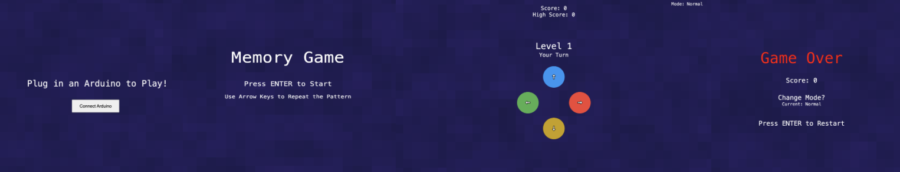
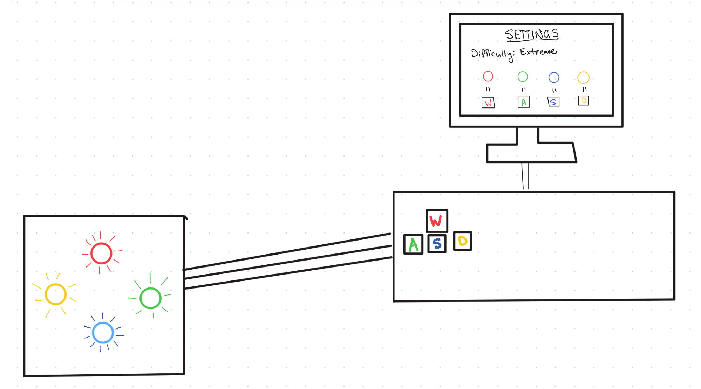
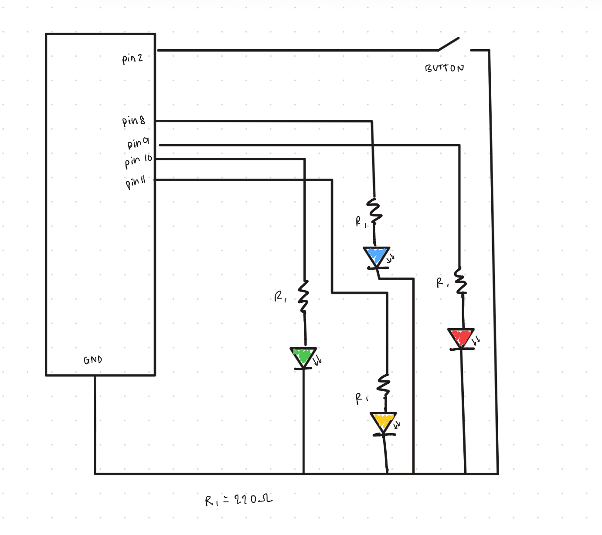
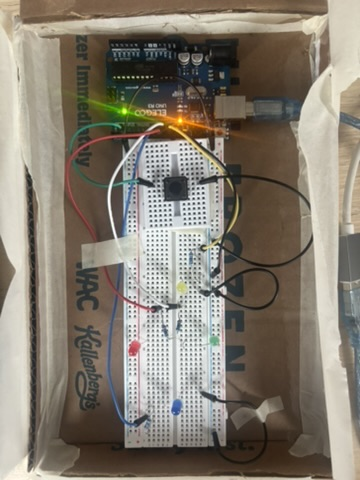

The game presents a sequence of flashing LEDs (red, blue, green, and yellow). The player watches the pattern and then repeats it using keyboard arrow keys. Each successful round adds another color to the sequence, increasing the difficulty.
The project combines physical hardware with a web-based interface. The Arduino controls the LEDs while the browser displays the score, level, and game state.

Inputs: Mode button on the Arduino and keyboard keys from the computer.
Outputs: LED sequences on the Arduino and visual feedback on the web interface.

Each LED is connected to a digital output pin through a 220Ω resistor to limit current. The push button connects to another digital pin and allows the player to cycle through difficulty modes that control the speed of the LED sequence.

The circuit was assembled on a breadboard with each LED connected to an Arduino digital output pin through a resistor. This allows the program to control the LEDs individually during the game sequence. The push button connects to a digital input pin and allows the player to change difficulty during gameplay.
The physical setup is housed in a low-fidelity enclosure made of cardboard and ping pong balls that disperse the light to keep the components organized and provide a better user experience during gameplay.
The Arduino program controls the LEDs and monitors the difficulty button. It listens for serial commands sent from the web interface and turns specific LEDs on or off accordingly. When the difficulty button is pressed, the Arduino sends a message back to the computer so the game can adjust its speed.
// FlashMemory Arduino Code
// ----------------------- Variables -----------------------
const int LED_PINS[4] = {8,9,10,11}; // Blue = 8, Red = 9, Green = 10, Yellow = 11
const int BUTTON_PIN = 2; // Button to change difficulty
int lastButtonState = HIGH; // For debouncing the button
unsigned long lastDebounce = 0; // Timestamp of the last button press
int debounceDelay = 200; // Debounce delay in milliseconds
// ----------------------- Setup -----------------------
void setup(){
Serial.begin(9600); // Start serial communication at 9600 baud rate
// Set LED pins as OUTPUT
for(int i=0;i<4;i++){
pinMode(LED_PINS[i],OUTPUT);
}
pinMode(BUTTON_PIN,INPUT_PULLUP); // Set the button pin as input with pull-up resistor
Serial.println("READY"); // Send a ready signal to the web interface, indicates the Arduino is set up and waiting for input
}
// ----------------------- Main Loop -----------------------
void loop(){
readButton();
}
// ----------------------- Button Reading -----------------------
void readButton(){
int buttonState = digitalRead(BUTTON_PIN); // Read the current state of the button
// Check for button press (active LOW) and debounce
if(buttonState==LOW && lastButtonState==HIGH){
// If the button was just pressed and enough time has passed since the last press, send a signal to the web interface
if(millis()-lastDebounce>debounceDelay){
Serial.println("MODE_BUTTON");
// Update the last debounce time to prevent multiple signals from a single press
lastDebounce=millis();
}
}
lastButtonState=buttonState; // Update the last button state for the next loop iteration
}
// ----------------------- Serial Event -----------------------
void serialEvent(){
// Read incoming serial messages from the web interface and control the LEDs accordingly
while(Serial.available()){
String msg=Serial.readStringUntil('\n');
// When the web interface sends a message to turn on an LED, the code extracts the LED index and turns on the corresponding LED.
if(msg.startsWith("LED_ON")){
int led=msg.substring(7).toInt();
digitalWrite(LED_PINS[led],HIGH);
}
// When the web interface sends a message to turn off an LED, the code extracts the LED index and turns off the corresponding LED.
if(msg.startsWith("LED_OFF")){
int led=msg.substring(8).toInt();
digitalWrite(LED_PINS[led],LOW);
}
}
}
The browser interface contains the main game logic. It generates random LED sequences, tracks player input, updates the score, and displays the game screens. Through WebSerial communication, it sends commands to the Arduino to control the LEDs and receives messages when the difficulty button is pressed.
// ----------------------- SERIAL SETTINGS -----------------------
const BAUD_RATE = 9600;
let port; // Serial port object
let connectBtn; // Connect Arduino button
let connected = false; // Is Arduino connected?
// ----------------------- GAME STATES -----------------------
// Possible states: disconnected Arduino, start game, countdown, playing, gameover
let gameState = "disconnected";
// ----------------------- GAME VARIABLES -----------------------
let sequence = []; // LED sequence
let userIndex = 0; // Index of user's current input
let level = 1; // Current level
let score = 0; // Current score
let highScore = 0; // Highest score
let playerTurn = false; // Is it the player's turn?
// ----------------------- COUNTDOWN -----------------------
let countdownValue = 3; // Countdown number before game starts
let countdownTimer = 0; // Timer to track countdown
// ----------------------- MODES -----------------------
let modeIndex = 1; // 0=Easy,1=Normal,2=Hard
let modeNames = ["Easy","Normal","Hard"];
let modeSpeeds = [700,500,250]; // Flash speed per mode
let flashSpeed = 500; // Current flash speed
let modeMessage = ""; // Temporary mode notification message
let modeMessageTimer = 0; // Timer for message display
// ----------------------- LED VISUALS -----------------------
// index 0 → pin 8 → blue
// index 1 → pin 9 → red
// index 2 → pin 10 → green
// index 3 → pin 11 → yellow
// LED colors in clockwise order: Up, Right, Down, Left
const ledColors = ["#2196F3","#F44336","#4CAF50", "#C9A000"];
const arrows = ["↑","→","←","↓"]; // Arrow labels
let ledStates = [false,false,false,false]; // LEDs ON/OFF state
// ----------------------- SETUP -----------------------
function setup(){
createCanvas(windowWidth, windowHeight); // Fullscreen canvas
textFont("monospace"); // Retro pixel font
textAlign(CENTER, CENTER);
setupSerial(); // Initialize Arduino serial
flashSpeed = modeSpeeds[modeIndex]; // Set initial flash speed
}
// ----------------------- MAIN DRAW LOOP -----------------------
function draw(){
background(20);
checkConnection(); // Update connection state
drawBackground(); // Draw background gradient
// Display different screens based on game state
if(gameState==="disconnected"){ drawDisconnected(); return; }
if(gameState==="start"){ drawStartScreen(); return; }
if(gameState==="countdown"){ drawCountdown(); return; }
if(gameState==="gameover"){ drawGameOverScreen(); return; }
// Main gameplay UI
drawGameUI();
drawLEDs();
drawModeNotification();
}
// ----------------------- BACKGROUND GRADIENT -----------------------
function drawBackground(){
let pixel = 40;
// Create a noise-based gradient background that changes with level and time
for(let x=0; x 1000){
countdownValue--;
countdownTimer = millis();
if(countdownValue === 0){
// Start the game after countdown
setTimeout(()=>{
gameState="playing";
addStep();
playSequence();
},500);
}
}
}
// Game over screen showing final score and high score
function drawGameOverScreen(){
fill("red"); textSize(70); text("Game Over", width/2, height/2-120);
fill("white"); textSize(30);
text(`Score: ${score}`, width/2, height/2-20);
textSize(30); text("Change Mode?", width/2, height/2+60);
textSize(20); text("Current: " + modeNames[modeIndex], width/2, height/2+90);
textSize(30); text("Press ENTER to Restart", width/2, height/2+180);
}
// ----------------------- GAME UI -----------------------
function drawGameUI(){
fill("white");
textSize(25);
text(`Score: ${score}`, width/2, 60);
text(`High Score: ${highScore}`, width/2, 90);
textSize(40); text(`Level ${level}`, width/2, height/2-180);
textSize(25); text(playerTurn ? "Your Turn" : "Watch Carefully", width/2, height/2-140);
textSize(20); text(`Mode: ${modeNames[modeIndex]}`, width-120, 40);
}
// ----------------------- KEY INPUT -----------------------
function keyPressed(){
if(!connected) return;
// Start game from start screen
if(gameState==="start" && keyCode===ENTER){ startGame(); return; }
// Restart from gameover
if(gameState==="gameover" && keyCode===ENTER){ restartGame(); return; }
// Only allow input during player's turn
if(gameState!=="playing" || !playerTurn) return;
if(keyCode === UP_ARROW) handleUserInput(0); // Blue
if(keyCode === RIGHT_ARROW) handleUserInput(1); // Red
if(keyCode === LEFT_ARROW) handleUserInput(2);
if(keyCode === DOWN_ARROW) handleUserInput(3);
}
// ----------------------- GAME FLOW -----------------------
// Initialize game variables for a new game
function startGame(){
sequence=[]; level=1; score=0;
countdownValue=3; countdownTimer=millis();
gameState="countdown";
}
// Reset game variables to restart after game over
function restartGame(){
sequence=[]; level=1; score=0; userIndex=0;
countdownValue=3; countdownTimer=millis();
gameState="countdown";
}
// ----------------------- USER INPUT -----------------------
function handleUserInput(index){
// Glow effect for key press
port.write(`LED_ON,${index}\n`);
setLEDVisual(index,true);
// Turn off LED after short delay
setTimeout(()=>{
port.write(`LED_OFF,${index}\n`);
setLEDVisual(index,false);
},250);
// Check if input matches sequence
if(index===sequence[userIndex]){
userIndex++;
if(userIndex===sequence.length){
// Player completed sequence
score++; // Increment score
highScore=max(score, highScore); // Update high score
level++; // Increment level
playerTurn=false; // End player's turn
// winAnimation(); // Play win animation
// Hard mode: random flashes between rounds
if(modeNames[modeIndex]==="Hard"){
hardModeFlash(()=>{ addStep(); playSequence(); });
} else {
addStep();
setTimeout(playSequence,600); // Normal/Easy: straight to next round
}
}
} else {
// Wrong input ends game
gameState="gameover";
playerTurn=false;
}
}
// ----------------------- SEQUENCE FUNCTIONS -----------------------
function addStep(){ sequence.push(floor(random(0,4))); } // Add random LED to sequence
// Play the LED sequence with appropriate timing
async function playSequence(){
playerTurn=false;
// Loop through sequence
for(let i=0;i{
let led=floor(random(4));
port.write(`LED_ON,${led}\n`);
setLEDVisual(led,true);
// Turn off after short delay
setTimeout(()=>{
port.write(`LED_OFF,${led}\n`);
setLEDVisual(led,false);
},120);
flashes++;
// After 6 random flashes, stop and continue to next round
if(flashes>6){
clearInterval(interval);
setTimeout(callback,300); // Continue next round
}
},150);
}
// ----------------------- LED DRAWING -----------------------
function drawLEDs(){
const centerX=width/2;
const centerY=height/2+80;
const spacing=120;
const positions=[
[centerX,centerY-spacing], // index 0 → UP
[centerX+spacing,centerY], // index 1 → RIGHT
[centerX-spacing,centerY], // index 2 → LEFT
[centerX,centerY+spacing] // index 3 → DOWN
];
// Draw each LED with glow effect if active
for(let i=0;i<4;i++){
push();
translate(positions[i][0], positions[i][1]);
fill(ledColors[i]); noStroke(); ellipse(0,0,100);
// Glow effect when LED is on
if(ledStates[i]){
for(let g=1; g<8; g++){
stroke(ledColors[i]);
noFill();
ellipse(0,0,100+g*6);
}
}
// Draw arrow labels
stroke("black"); strokeWeight(4);
fill("white"); textSize(35); text(arrows[i],0,0);
pop();
}
}
// Update LED visual states for drawing
function setLEDVisual(index,state){ ledStates[index]=state; }
// ----------------------- MODE FUNCTIONS -----------------------
// Cycle through game modes and update flash speed
function cycleMode(){
modeIndex++;
if(modeIndex>2) modeIndex=0;
flashSpeed=modeSpeeds[modeIndex];
modeMessage=`Mode: ${modeNames[modeIndex]}`;
modeMessageTimer=millis();
}
// Display temporary mode change notification
function drawModeNotification(){
if(millis()-modeMessageTimer<2000){
fill("white"); textSize(30);
text(modeMessage,width/2,height-80);
}
}
// ----------------------- SERIAL FUNCTIONS -----------------------
// Read serial messages from Arduino
function readSerial(){
if(!port || !port.opened()) return;
let msg = port.readUntil("\n");
if(!msg) return;
msg = msg.trim();
if(msg==="MODE_BUTTON"){ cycleMode(); }
}
// Initialize serial connection and setup connect button
function setupSerial(){
port=createSerial();
connectBtn=createButton("Connect Arduino");
connectBtn.size(220,60);
connectBtn.style("font-size","20px");
connectBtn.mouseClicked(connectClicked);
connectBtn.position(width/2 - connectBtn.width/2, height/2 + 80);
}
// Connect/disconnect button
async function connectClicked(){
if(!port.opened()){
await port.open(BAUD_RATE);
connected=true;
connectBtn.hide();
gameState="start";
} else {
port.close();
connected=false;
gameState="disconnected";
connectBtn.show();
}
}
// Check Arduino connection every frame
function checkConnection(){
if(port && port.opened()){
connected=true;
readSerial();
} else {
connected=false;
}
}
// ----------------------- UTILITY -----------------------
function sleep(ms){ return new Promise(resolve=>setTimeout(resolve,ms)); } // Simple sleep function for async timing
// Adjust canvas & button on resize
function windowResized(){
resizeCanvas(windowWidth,windowHeight);
connectBtn.position(width/2 - connectBtn.width/2, height/2 + 80);
}
FlashMemory works by connecting an Arduino hardware system to a browser-based interface using WebSerial communication.
When the user connects the Arduino through the browser, the p5.js program establishes a serial connection. This allows the computer and Arduino to continuously exchange messages.
During gameplay, the web program generates a random sequence representing the four LEDs. The program sends commands to the Arduino to activate each LED in order, creating the pattern the player must remember.
After the sequence finishes playing, the player attempts to repeat it using keyboard arrow keys. Each key corresponds to one of the LEDs. The program checks each input against the expected sequence.
If the player enters the correct pattern, the score increases and a new step is added to the sequence for the next round. If an incorrect key is pressed, the game ends and the final score is displayed.
The difficulty level can also be changed using a physical button connected to the Arduino. When pressed, the Arduino sends a signal to the web interface, which adjusts the speed of the LED sequence. Faster speeds create a more challenging game. Specifically for hard mode, there is an introduction of random flashes between rounds to increase difficulty and test the player's focus and memory retention under pressure.
Video Link: https://drive.google.com/file/d/1OCCuLeHKKlaviHlq8YeT5EtVJbrvqmTB/view?usp=sharing
The demonstration video shows the full gameplay loop: connecting the Arduino, displaying the LED sequence, and the player repeating the pattern using the keyboard while the system tracks score and progression on normal and hard difficulty levels.
This project was a fun opportunity to combine physical computing, user interface design, and game logic. My biggest challenge was definitely making sure there was reliable communication between the Arduino and the web interface. Debugging serial communication and timing issues was necessary to make sure the LEDs responded smoothly to the game logic.
Through this process, I gained a deeper understanding of how hardware and software systems interact in real time and will be experimenting more over the coming weeks.
Link to Project Slide Deck: Project Slide Deck